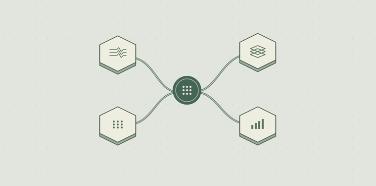

序言
机器人显示的轨迹在转弯时跳了一下。屏幕只保留结果，想知道那一刻雷达有没有数据、定位节点用了哪次坐标变换，就需要回到当时传递的消息。ROS 2 的录包工具可以把这些消息留给下一次检查。

节点之间怎样传数据
把节点理解为一个承担具体工作的软件组件。例如相机驱动发布图像，定位节点订阅图像，显示工具也能订阅同样的数据。话题是有名称和类型的通信通道，图像和角速度通常走不同的话题。发送数据的一端叫发布者，接收的一端叫订阅者。
消息类型规定字段的布局和含义。例如激光扫描包含量测值，许多传感器消息还带有 Header，其中记录时间戳和坐标系名称。两个节点即使碰巧选择同一个话题名，也要能理解相同的消息类型，并满足通信策略的兼容条件，才能交换数据。
rosbag2 录制时本身就会订阅选定的话题，把实际收到的消息写入录包。回放时它反过来作为发布者，把这些内容再发布给离线节点。它保存的是消息，并没有自动保存每个节点的内部变量、参数配置、地图文件或启动方式。要比较两次运行，还应知道两次使用的配置和输入是否相同。
先读录包目录，再打开轨迹
在已配置 ROS 2 环境的终端里，ros2 bag info <包目录> 会列出录制时段、时长、话题、类型和消息数。先确认出问题的时刻落在录制范围内，再找传感器、坐标变换和定位输出是否都在。缺少其中一路时，能回答的问题也会少一部分。
例如激光标称 10 Hz，运行 60 秒，大约有 600 帧。实际录到 598 帧与预期很接近，但仍不能推断每一秒都均匀到达。把相邻两帧的时间戳相减，正常间隔大约是 0.1 秒。如果转弯处突然相隔 0.6 秒，故障窗口值得放大到转弯前后几秒逐帧查看。
消息头里的时间通常按驱动的采集约定填写，录包还会记录用于排序和回放的时间。两者可能来自不同的时钟或包含不同的延迟。拿设备开机后经过的 12 秒直接减去电脑墙钟时刻，结果没有可比性。可以先用角速度开始上升等共同事件对齐，再比较时间差是否在多次转弯中重复出现。
明明有话题，为什么没有消息
ROS 2 的服务质量策略简称 QoS。发布端说明自己能提供什么，订阅端提出最低要求。可靠性策略里，best effort 容许偶发丢失，reliable 则要求更强的交付保证。如果发布端只提供 best effort，而订阅端要求 reliable，这两个端点无法按这一要求匹配。
在离线回放域中，用 ros2 topic info /scan --verbose 查看发布者和订阅者各自声明的 QoS。若有多种传感器，把 /scan 换成实际的话题名。确认可靠性等策略兼容后，再检查消息数、到达间隔。把队列调大无法修复本来就无法匹配的端点。
也要留意数据有没有录进去。若录制时订阅就没有建立，回放时调整订阅配置并不能补出缺失的历史帧。反过来，录包里有足够消息而离线算法收不到，才适合从回放发布端、离线订阅端和话题名称入手。
围绕一次转弯重做比较
在独立的 ROS 域里运行回放和离线分析节点，避免把保存过的运动命令送到现场控制器。取同一个时间窗口，按顺序记录最后一条正常扫描、第一条异常记录、当时可用的变换与定位结果。最好同时留一段相似但正常的转弯作为对照。
假设扫描按时到了第二帧，定位日志却显示查不到第二帧采集时刻的变换。此时优先检查坐标系名称、变换的时间覆盖和节点时钟。修正后回放同一窗口，如果变换查询恢复而轨迹仍跳动，才进入匹配或优化环节。这样每一步都用一个可观察的结果缩小范围。